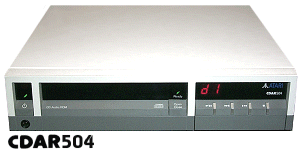
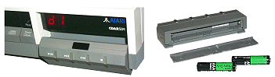
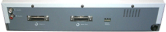
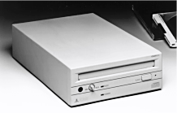

|

The Atari CDAR-504 (Also known as the
"Optofile") was
launched in late 1985. Atari were the first company to utilise the
Digital Research CD-ROM drivers commercially (via GEM), and believed that CD-ROM
applications had a bright future in the computer market.
Although
this has turned out to be true, unfortunately it wasn't the time for CD
technology when Atari designed the CDAR-504. Software was thin on
the ground, and many pundits couldn't figure out how you would fill a
650MB CD-ROM with anything that would be useful to them. Applications being
designed ranged from the Boeing 747 parts guide, to various
encyclopaedia
products, but the cost of CD technology was far too expensive for the
consumer market in 1985. Initially, the unit had a price tag of
$799, this soon came down to a more reasonable $499 in 1989.
Atari
"launched" the CDAR-504 many times, but it never filtered
through to the retail channel in large numbers, and any units in use
were mostly sold to developers. Again in 1988 and in
1989, Atari spoke of the infamous CDAR-504, but hardly anybody got to
utilise the device. You could call Atari direct and purchase the
unit from its Sunnyvale HQ, and some dealers got a few, but it still
ranks as one of those "rare" Atari products that was mostly written
about and photographed at shows.

The unit offered audio left/right out, ASCI
in/out and a remote control which could detach from the main housing.
It was based on a single speed Chinon drive mechanism.

In
1990 Atari officially canned the CDAR-504, there were stories of
"thousands" of the units sitting in warehouses as far away as
Australia! (where did they all go?). But in true Atari style, the CD-ROM came back, and in
1991 the new CDAR-505 SCSI unit was launched and shown with the Atari TT
at computer shows. The 505 was never seen again... There was
talk of an Atari badged CD-ROM drive for the Atari Falcon, but this was
soon dismissed, and Atari said Falcon users could just use "any" SCSI
compatible CD-ROM drive instead.

Incidentally, the only Atari CD Player
device to actually make it to the end user was the infamous
Jaguar CD,
produced exclusively for the Atari Jaguar game console. It had a limited production run and unfortunately only a handful of
titles.
|